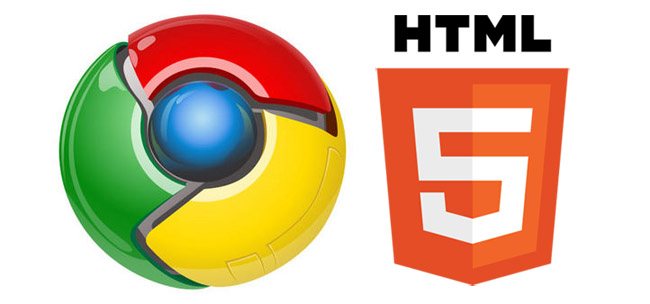

Новости в мире HTML

НОВАЯ ВЕРСИЯ CHROME ВКЛЮЧАЕТ HTML5 ПО-УМОЛЧАНИЮ
Компания Google выпустила стабильную версию десктопного браузера Chrome 56 для операционных систем macOS, Windows и Linux. Это событие произошло спустя 55 дней после выхода Chrome 55.
Главным изменением стало включение технологий HTML5 по умолчанию для всех пользователей. Отметим, что Google начала внедрять HTML5 среди небольшой подборки пользователей еще с релиза Chrome 55, а теперь эта опция включена у всех пользователей в международном масштабе. Поддержка WebGL 2.0 также внедрена по умолчанию.

Напомним, Google Chrome — браузер, разрабатываемый компанией Google на основе свободного браузера Chromium и движка Blink. Первая публичная бета-версия для Windows вышла 2 сентября 2008 года, а первая стабильная — 11 декабря 2008 года.
С последним обновлением Chrome также стал удобнее: в частности, были внесены изменения в JavaScript-движок V8, что, согласно внутренним тестам, в среднем на 50 % снижает потребление памяти. Больше всего изменения станут заметны владельцам устройств с не очень большим объёмом оперативной памяти, включая смартфоны и планшеты. Более того, в программу была добавлена автоматическая расстановка переносов в CSS, благодаря чему тексты в браузере стали более удобочитаемы.